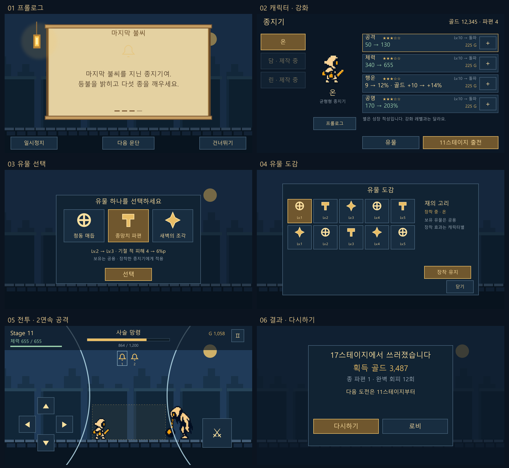
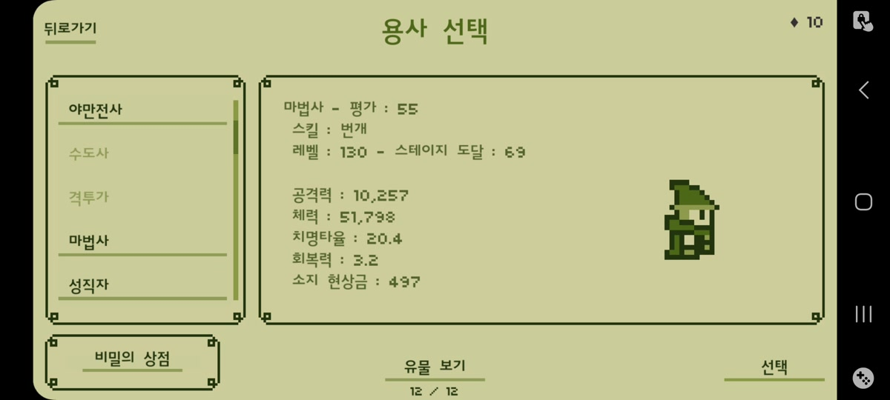
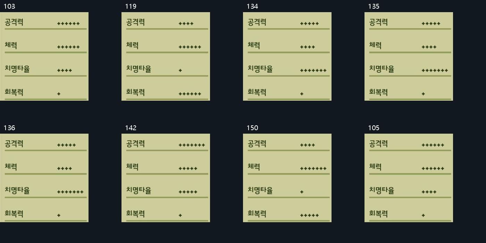
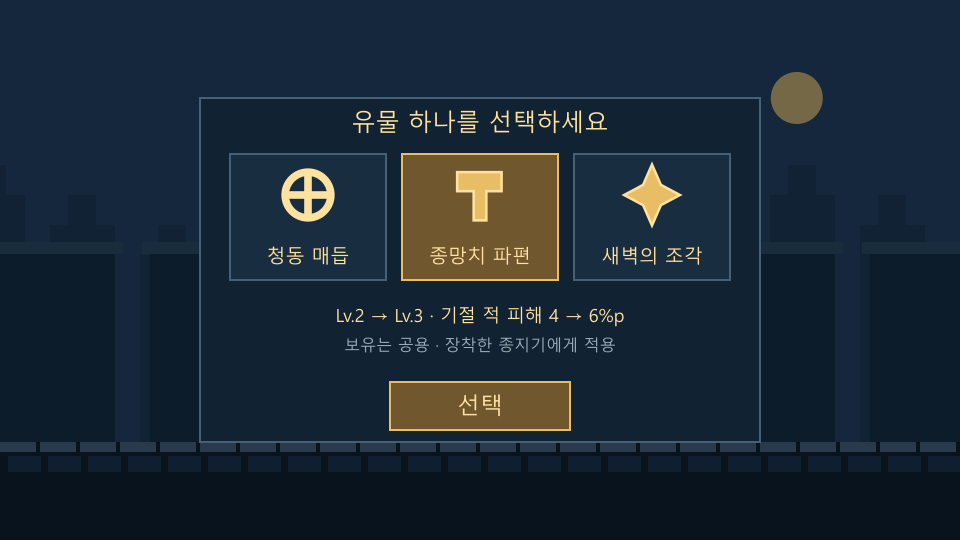
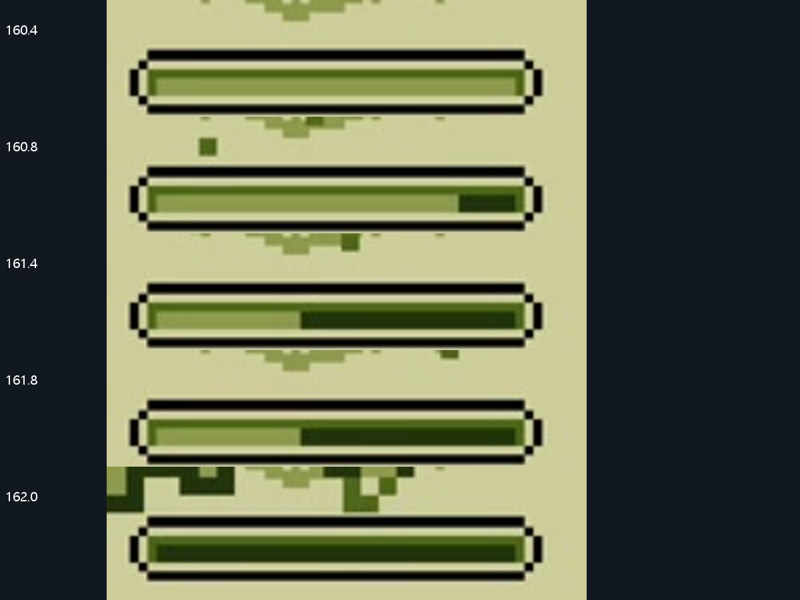
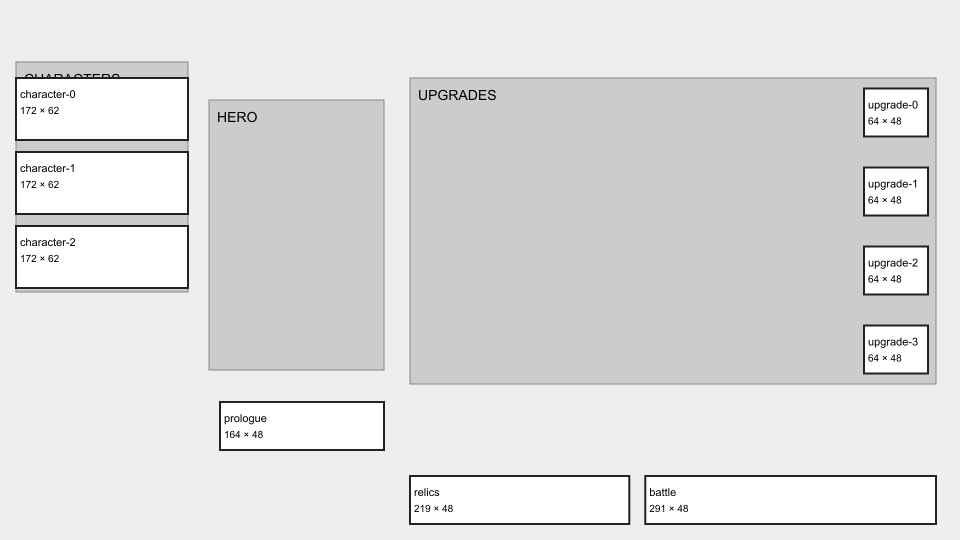
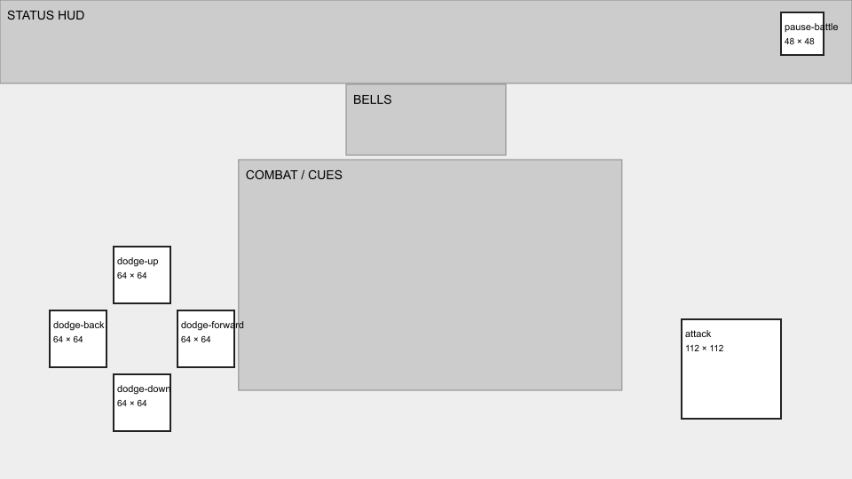
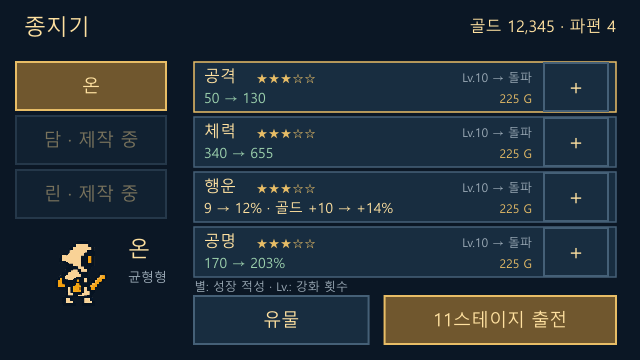

01 성장 가독성
별 / 강화 레벨 / 실제 증가량을 분리
별은 성장 적성입니다. 구매 직전 50 → 130처럼 실제 정수 변화를 보여줍니다. 10→11, 20→21의 돌파와 이후 계속 오르는 비용은 유지합니다.
사용자 제공 12분 26.6초 플레이 영상과 현재 Unity 코드를 대조했습니다. 화면 흐름·성장·유물·전투 규칙을 나누어 분석하고, Last Bell에서 유지할 것과 바꿀 것을 정리했습니다.
직접 조작하는 미리보기 →8초 전투 연출 영상6개 화면 한눈에 보기기획 전용 · Unity / GameData / 빌드 미변경 · 영상 속 게임 ver.1.0.7 · 기존 성장 계정의 녹화
이 문서는 v8 분석 기록입니다. 현재 결정은 v8.1 변경 기획을 따릅니다.
별은 성장 적성입니다. 구매 직전 50 → 130처럼 실제 정수 변화를 보여줍니다. 10→11, 20→21의 돌파와 이후 계속 오르는 비용은 유지합니다.
현재 중앙 3후보 구조를 유지합니다. 선택 후 신규 또는 Lv.2→3, 효과 4→6%p를 보여주고 아래 버튼으로 확정합니다. 전역 보유와 캐릭터별 장착을 구분합니다.
0·240·480 예고 / 720ms 첫 단타, 480ms 연타 간격을 유지합니다. 제안은 파동을 매번 480ms로 통일하고 현재 타격의 종만 강조하는 것입니다.
현재 구현된 두루마리 프롤로그, 작은 유물 선택, 안쪽으로 옮긴 모바일 버튼, 화면 정중앙 완벽 회피 파동, 아래 방향키 쳐내기, 11스테이지 체크포인트를 보존합니다. 캐릭터·몬스터 아트와 승인된 공격 모션도 유지합니다.

| 원본 시간 | 화면 | 실제 관찰 |
|---|---|---|
| 00:05.0–01:01.0 | 프롤로그 | 삽화 4장과 짧은 글을 순차적으로 표시. 우하단 건너뛰기가 유지된다. 녹화에서 약 56초 소요. |
| 01:04.0–01:05.0 | 타이틀 | 클래식·콜로세움·레이드와 상점, 설정, Credits. 화면에 ver. 1.0.7 표시. 스토어의 iOS 2.3.0 설명과 같은 빌드로 간주하지 않는다. |
| 01:06.0–01:20.0 | 용사 선택 | 좌측 세로 목록, 우측 선택 용사의 평가·스킬·레벨·도달 단계·4능력치·개별 보유 현상금. 용사 변경 시 현상금도 달라진다. 평가 50·55·125 등 종합 점수는 개별 능력치 성장 기호 수와 다르다. |
| 01:21.0–01:39.0 | 유물 목록 | 보유 목록에는 12종이 보이고, 전 용사에게 적용된다는 안내가 반복된다. 하단 12/12와 다음 슬롯 200다이아 안내. 장착 방식과 슬롯 상한 전체는 영상만으로 확정 불가. |
| 10:49.0–11:19.0 | 런 종료와 보상 정산 | 21층 전투 뒤 화면을 전환해 10층 돌파 유물, 20층 돌파 유물을 차례로 선택. 3후보 → 선택 설명 → 고르기 → 업그레이드 안내. 마지막 승리 화면은 획득 현상금 3,487과 계속 버튼. 종료 입력/사망 판정 원인은 확정하지 않는다. |
| 11:48.5–12:13.0 | 재화 부족 | 성기사 20레벨 화면에서는 다이아 1개→현상금 6,000, 새 네크로맨서는 1개→1,000. 환율이 달라지지만 전체 결정식은 미확인. 확인·취소가 분리된다. |
| 12:18.0–12:26.6 | 기타 모드 | 비밀 상점의 보석 상품, 콜로세움 3인 팀과 명예 755, 잠긴 용사 목록이 보인다. 실제 구매·콜로세움 전투·레이드 플레이는 녹화되지 않았다. |
첫 실행 → 프롤로그 → 온 선택 / 강화 → 출전 → 5스테이지 종 안내 → 10스테이지 성문 수호자 → 이후 11스테이지부터 재도전. 현재 플레이 범위는 1~20, 21은 경계 데이터입니다. 이번 기획이 자동으로 50스테이지 공개를 의미하지 않습니다.
원작의 약 56초 프롤로그 길이를 복제하지 않습니다. 현재 18초, 4문단을 유지하고 각 문단을 두루마리 안에서 조금씩 올립니다. 좌측 램프·빛, 배경의 성문 실루엣은 이야기의 목표를 돕습니다. 첫 실행 자동 재생, 매 화면 건너뛰기, 로비 다시 보기, 일시정지와 다음 문단을 제공합니다.
| 문단 | 표시 문구 | 시간 |
|---|---|---|
| 1 | 종소리가 멎자, 마을의 등불이 꺼졌습니다. | 0–4.5초 |
| 2 | 어둠 속에 잠든 사람들은 아침을 기다리고 있습니다. | 4.5–9초 |
| 3 | 마지막 불씨를 지닌 종지기여. 등불을 밝히고 다섯 종을 깨우세요. | 9–13.5초 |
| 4 | 성문 너머, 첫 번째 종이 있습니다. 이제 당신의 여정이 시작됩니다. | 13.5–18초 |
5스테이지 첫 진입은 기존 요청대로 잠시 멈추고 “적들은 가끔 연속 공격을 합니다. 종의 개수를 살피세요!”와 확인 버튼만 표시합니다. 강제 회피 연습을 다시 추가하지 않습니다. 결과는 획득 골드·파편, 쓰러진 스테이지, 다음 시작 스테이지, 다시하기 / 로비 두 버튼을 중심으로 구성합니다.
원작은 선택한 영웅 옆에서 스킬과 성장 적성을 비교하기 쉽고, 용사별 현상금 지갑을 사용합니다. 우리는 현행 저장 구조를 유지하며 선택 영웅·실제 값·그 영웅의 성장 적성에 시선을 모읍니다. 온은 선택 가능, 담과 린은 제작 중으로 유지합니다. 별이 더 많다는 이유만으로 총합 순위를 붙이지 않고 공격형 / 생존형의 역할로 비교합니다.
원작의 광고 보상·다이아 교환·콜로세움 3인 팀은 관찰 목록으로만 남깁니다. 신규 경제·광고 SDK·과금·추가 모드 도입은 이 기획의 범위가 아닙니다.

영상 표시값 원작은 성장 기호가 1~7개까지 나옵니다. 우리 1~5성과 일대일로 대응하지 않습니다. 기사 6/6/4/1, 도적 5/4/7/1, 성기사 4/7/1/5처럼 같은 영웅 안에서도 적성이 다릅니다. 수치는 공격 / 체력 / 치명타율 / 회복력 순서입니다.
| 능력치 | 성장 기호 | 캐릭터 | 이전 → 다음 | 증가 | 비용 | 근거 |
|---|---|---|---|---|---|---|
| 공격력 | 4개 | 성기사 / 네크로맨서 | 18 → 20 | +2 | 40 | 02:30.0 |
| 공격력 | 5개 | 도적 | 21 → 23 | +2 | 40 | 02:14.0 |
| 공격력 | 6개 | 기사 | 24 → 26 | +2 | 40 | 01:43.0 |
| 체력 | 4개 | 도적 | 120 → 133 | +13 | 30 | 02:15.0 |
| 체력 | 6개 | 기사 / 네크로맨서 | 160 → 177 | +17 | 30 | 01:59.0 |
| 체력 | 7개 | 성기사 | 180 → 200 | +20 | 30 | 11:32.0 |
| 치명타율 | 1개 | 성기사 / 네크로맨서 | 0 → 0.6 | +0.6%p | 1,000 | 02:00.0 |
| 치명타율 | 4개 | 기사 | 0 → 1.2 | +1.2%p | 1,000 | 01:45.0 |
| 회복력 | 1개 | 도적 | 0 → 1.2 | +1.2 | 2,000 | 02:16.0 |
| 회복력 | 5개 | 성기사 | 0 → 2.8 | +2.8 | 2,000 | 11:33.5 |
| 회복력 | 6개 | 네크로맨서 계열 표시 | 0 → 3.2 | +3.2 | 2,000 | 02:08.0 |
2·3개 기호 등 영상에서 열어 보지 않은 조합은 미확인입니다. 공격 적성 4·5·6도 첫 강화는 모두 +2로 표시됩니다. 이것만 보고 전체 강화 폭이 같다고 결론 내리면 안 됩니다. 초기 값·고레벨 곡선·정수 반올림이 함께 작용할 수 있습니다.
치명타 0.4 + 0.2 × 기호 수, 회복 0.8 + 0.4 × 기호 수는 관찰된 일부 조합과 맞습니다. 그러나 기호별 전 구간 측정이 없어 원작 확정 공식으로 쓰지 않습니다. 회복은 영상 표시 수치이며 %인지 고정 HP인지까지 단정하지 않습니다. Last Bell에는 그대로 도입하지 않습니다.
11:37부터 실제 연속 구매를 따라 적었습니다. Lv.20까지 구매, 20→21은 자금 부족 견적입니다. 1→20 누적 비용은 3,135, 현상금은 3,487→352로 일치합니다.
| 레벨 | 공격력 | 증가량 | 현상금 비용 | 원본 |
|---|---|---|---|---|
| 1 → 2 | 18 → 20 | +2 | 40 | 11:37.0 |
| 2 → 3 | 20 → 23 | +3 | 45 | 11:37.5 |
| 3 → 4 | 23 → 27 | +4 | 50 | 11:38.0 |
| 4 → 5 | 27 → 31 | +4 | 56 | 11:38.5 |
| 5 → 6 | 31 → 35 | +4 | 64 | 11:38.7 |
| 6 → 7 | 35 → 39 | +4 | 72 | 11:39.0 |
| 7 → 8 | 39 → 43 | +4 | 81 | 11:39.5 |
| 8 → 9 | 43 → 48 | +5 | 91 | 11:40.0 |
| 9 → 10 | 48 → 52 | +4 | 102 | 11:40.5 |
| 10 → 11 | 52 → 80 | +28 | 577 | 11:41.0 |
| 11 → 12 | 80 → 89 | +9 | 129 | 11:42.5 |
| 12 → 13 | 89 → 99 | +10 | 146 | 11:43.0 |
| 13 → 14 | 99 → 110 | +11 | 164 | 11:43.5 |
| 14 → 15 | 110 → 123 | +13 | 184 | 11:43.8 |
| 15 → 16 | 123 → 136 | +13 | 208 | 11:44.0 |
| 16 → 17 | 136 → 152 | +16 | 234 | 11:44.5 |
| 17 → 18 | 152 → 169 | +17 | 263 | 11:45.0 |
| 18 → 19 | 169 → 188 | +19 | 296 | 11:45.5 |
| 19 → 20 | 188 → 209 | +21 | 333 | 11:46.0 |
| 20 → 21 | 209 → 356 | +147 | 1,874 | 11:46.5 · 견적만 |
표본에 맞는 식 floor(40 × 1.125^(현재Lv−1) × [10의 배수 레벨이면 5, 아니면 1])이 위 20개 가격과 일치합니다. 원작 소스에서 확인한 공식은 아닙니다. 특히 577 → 129로 가격이 다시 내려가므로 이 규칙은 우리 게임에 적용하지 않습니다.
현재의 강화 Lv.0은 미강화 상태입니다. 원작의 시작 Lv.1과 표기 기준이 다릅니다. 다음 표는 현재 GameData와 계산식으로 구한 값이며 새로운 상향안이 아닙니다. UI에 다음 값을 보여주는 것이 이번 변경입니다.
| 적성 | 공격 0→1 | 체력 0→1 | 공격 10→11 | 체력 10→11 | 공격 20→21 | 체력 20→21 |
|---|---|---|---|---|---|---|
| 1성 | 10→12 (+2) | 100→112 (+12) | 30→74 (+44) | 220→394 (+174) | 115→275 | 578→1017 |
| 2성 | 10→13 (+3) | 100→118 (+18) | 40→101 (+61) | 280→522 (+242) | 164→403 | 805→1464 |
| 3성 | 10→14 (+4) | 100→124 (+24) | 50→130 (+80) | 340→655 (+315) | 216→541 | 1044→1957 |
| 4성 | 10→15 (+5) | 100→130 (+30) | 60→159 (+99) | 400→796 (+396) | 269→690 | 1295→2498 |
| 5성 | 10→16 (+6) | 100→136 (+36) | 70→190 (+120) | 460→942 (+482) | 325→850 | 1558→3090 |
| 적성 | 행운: 치명타 | 행운: 골드 | 공명: 기절 피해 | 돌파 Lv.11/21/31/41 |
|---|---|---|---|---|
| 1성 | +2%p / 10레벨 | +1%p / 레벨 | +1%p / 레벨 | 치명타·골드 +1%p / 공명 +10%p 추가 |
| 2성 | +3%p / 10레벨 | +1%p / 레벨 | +2%p / 레벨 | 치명타·골드 +2%p / 공명 +20%p 추가 |
| 3성 | +4%p / 10레벨 | +1%p / 레벨 | +3%p / 레벨 | 치명타·골드 +3%p / 공명 +30%p 추가 |
| 4성 | +5%p / 10레벨 | +2%p / 레벨 | +4%p / 레벨 | 치명타·골드 +4%p / 공명 +40%p 추가 |
| 5성 | +6%p / 10레벨 | +2%p / 레벨 | +5%p / 레벨 | 치명타·골드 +5%p / 공명 +50%p 추가 |
행운의 치명타는 10레벨 기준 증가량을 정수로 나누어 적용합니다. 어떤 한 레벨에서 치명타가 그대로여도 골드 보너스는 증가합니다. 치명타 8→8%, 골드 +8→+9%처럼 두 효과를 함께 보여주면 헛강화로 오해하지 않습니다. %는 확률/보너스, %p는 그 차이이며 게임 화면의 스텟 값은 정수입니다.
L = 개별 능력치 강화 레벨, S = 1~5성 B = max(0, floor((L−1)/10)) q = [0.5, 0.75, 1, 1.25, 1.5][S−1] 공격 = 반올림((10 + 4qL) × (2.3 + 0.05(S−1))^B) 체력 = 반올림((100 + 24qL) × (1.7 + 0.05(S−1))^B) 치명타% = min(60, 5 + floor(L × [2,3,4,5,6][S−1]/10) + SB) 골드 보너스% = min(150, L × [1,1,1,2,2][S−1] + SB) 공명% = min(600, 140 + S(L+10B))
적성은 캐릭터 데이터이고 레벨은 각 스텟의 투자량입니다. 미리보기의 적성 변경 메뉴는 비교 도구일 뿐 게임 내 별 변경 기능이 아닙니다.

영상 관찰 목록의 12종과 보상 후보의 신규 2종을 합쳐 14종을 식별했습니다. 개별 효과의 정확한 %·고정 수치·MAX 레벨은 표시되지 않아 복원할 수 없습니다. 아래는 녹화에서 확인한 범위이며 게임 전체 유물 목록이 아닙니다.
| 유물 | 역할 | 효과 요지 | 관찰 레벨 | 원본 |
|---|---|---|---|---|
| 용의 발톱 | 보스 지속 피해 | 보스에게 일정 시간 추가 피해 | MAX | 01:21.0 |
| 대마법사의 갑옷 | 보스 방어 | 보스에게 받는 피해 감소 | 6 | 01:23.0 |
| 용의 송곳니 | 보스 흡혈 | 보스를 공격하면 체력 회복 | 7 | 01:24.0 |
| 거인의 심장 | 생존 | 최대 체력 증가 | MAX | 01:38.0 |
| 키메라의 발톱 | 일반 적 지속 피해 | 일반 적에게 일정 시간 추가 피해 | 2 | 01:25.0 |
| 대마법사의 장갑 | 보스 치명타 | 보스에게 치명타를 더 자주 가함 | 8 → 9 | 01:28.0 |
| 탐욕의 상자 | 경제 | 보스에게서 더 많은 현상금 획득 | 6 | 01:29.0 |
| 파괴의 도끼 | 방어 관통 | 몬스터의 피해 감소를 무시 | MAX | 01:30.0 |
| 대마법사의 투구 | 반격 | 보스전에서 반격 기회를 더 자주 제공 | 4 | 01:31.0 |
| 대마법사의 검 | 보스 공격 | 보스에게 가하는 피해 증가 | 6 | 01:32.0 |
| 사도의 장갑 | 일반 적 치명타 | 일반 적에게 치명타를 더 자주 가함 | 3 → 4 | 01:33.0 |
| 신성한 반지 | 스킬 연계 | 스킬 사용 시 체력 추가 회복 | 1 | 01:34.0 |
| 키메라의 뿔 | 반사 | 일반 적의 공격에 일정량 반사 | 보상 후보 Lv.1 | 11:11.0 |
| 회복의 목걸이 | 전투 후 회복 | 싸움 후 더 많은 체력 회복 | 보상 후보 Lv.1 | 11:13.0 |
“모든 영웅에게 적용”은 반복해서 확인됩니다. 다만 목록 하단 12/12와 다음 슬롯 200다이아는 보이지만, 전체 소지·장착 상한의 상세 규칙은 영상만으로 확정하지 않습니다. 원작의 전역 누적 효과와 우리 3슬롯 장착 체계는 성장 폭이 크게 다릅니다.
| 유물 | 효과 | Lv.1 / 2 / 3 / 4 / 5 값 (%) | 데이터 ID |
|---|---|---|---|
| 재의 고리 | 공격력 증가 | 4 / 5 / 6 / 7 / 8 | relic_05 |
| 새벽의 조각 | 최대HP 증가 | 6 / 7.5 / 9 / 10.5 / 12 | relic_10 |
| 사슬 종추 | 일반 회피 누적 증가 | 5 / 10 / 15 / 20 / 25 | relic_15 |
| 맑은 종추 | 완벽 회피 누적 증가 | 5 / 10 / 15 / 20 / 25 | relic_20 |
| 종망치 파편 | 기절 적 피해 배율 가산 | 2 / 4 / 6 / 8 / 10 | relic_25 |
| 새벽의 장막 | 받는 피해 감소 | 4 / 5 / 6 / 7 / 8 | relic_30 |
| 꺼진 심지 | 공격력 증가 | 2 / 3 / 4 / 5 / 6 | relic_35 |
| 청동 매듭 | 최대HP 증가 | 6 / 7 / 8 / 9 / 10 | relic_40 |
| 울림 고리 | 치명 확률 가산 | 1 / 1.5 / 2 / 2.5 / 3 | relic_45 |
| 여명의 종인 | 기절 적 피해 배율 가산 | 1 / 1.5 / 2 / 2.5 / 3 | relic_50 |
유물 후보는 아이콘 + 이름만 표시합니다. 하나를 누르면 아래 공유 설명 영역에서 신규/중복, 현재 레벨→다음 레벨, 현재 효과→다음 효과를 보여줍니다. 선택 버튼을 누르기 전에는 획득하지 않습니다. 확정 후 중복 클릭은 차단하고 보상이 한 번만 지급되어야 합니다.
현재 전역 보유 / 캐릭터별 최대 3슬롯 장착을 유지합니다. 원작처럼 모든 유물을 자동 적용하면 기존 슬롯 선택의 의미와 난도가 달라집니다. 도감은 이름, 효과, 보유 Lv., 선택 캐릭터의 장착 여부, 슬롯 제한을 구분해 표시합니다.
| 문제 | 제안 | 세이브 처리 |
|---|---|---|
| 울림 고리·여명의 종인: 1 / 1.5 / 2 / 2.5 / 3%는 정수 표시·반올림 시 중간 레벨 효과가 겹침 | 두 유물 모두 1 / 2 / 3 / 4 / 5%로 정수 단계화. 공격 판정에 쓰는 최종 값과 표시 값은 같은 계산 결과 사용. | 같은 ID·보유 Lv. 유지. 레벨별 효과 테이블만 다음 적용 단계에서 수정. |
| 새벽의 조각: 7.5 / 10.5% 표시 | 6 / 8 / 10 / 12 / 14%로 정수 증가. 청동 매듭과 역할 중복은 남으므로 둘의 획득 비중을 별도 점검. | 기존 유물을 삭제하거나 다른 능력으로 교체하지 않음. |
| 저레벨 공격 % 유물은 최종 공격 반올림으로 1레벨 차이가 사라질 수 있음 | 설명에 보너스 %와 실제 총 공격력 둘 다 표시. 최종 공격 최소 +1을 무조건 보장하는 규칙은 여러 유물 중첩 상향을 일으켜 도입하지 않음. | 합산한 효과를 최종 단계에서 한 번만 정수화. |
| MAX 중복 또는 모든 후보 MAX | 현재 전장 보상표의 골드 전환을 미리 표시. 예: 11~20 구간 2,399 G. | 지급·선택 확정은 1회 트랜잭션. 재진입 시 재지급 방지. |
기존 10종을 변형·폐기하지 않고 새 ID로 추가하는 후속안입니다. 이번 미리보기와 현행 밸런스에는 포함하지 않았습니다.
| 가칭 | Lv.1→5 | 조건 / 제한 |
|---|---|---|
| 되울림의 파편 | 완벽 회피 후 첫 공격 피해 +10 / 15 / 20 / 25 / 30% | 500ms 반격 기회 안에서 첫 1회 소비. 연속 공격 회피를 강요하는 시점에는 공격 취소 보장. |
| 따뜻한 심지 | 전투 종료 시 최대 HP의 3 / 4 / 5 / 6 / 7% 회복 | 전투 중 흡혈과 분리. 치유는 정수, 최대 HP 초과 없음. |
| 수호자의 균열 | 보스 피해 +5 / 7 / 9 / 11 / 13% | 일반 적 효과 없음. 기존 공격%와 곱연산 폭증 대신 같은 피해 보너스 묶음에서 합산 검토. |

| 항목 | 영상 표본 | 해석 |
|---|---|---|
| 플레이어 공격 | 04:55.9 부근 이후 약 0.8~0.9초 간격으로 반복 | 사용자 입력 간격이 포함된 관찰치. 엔진의 최소 쿨다운으로 단정할 수 없음. |
| 일반 적 준비→타격 | 04:54.1→294.9초, 299.7→300.6~300.7초 | 약 0.8~1.0초. 일반 적 한 종류의 2표본. |
| 일반 적 타격→다음 타격 | 294.9→300.6~300.7초 | 약 5.7~5.8초. 모든 적의 공격 주기가 아님. |
| 10층 보스 타격 간격 | 03:54.6→238.3초 | 약 3.7초. 이후 기절/반격으로 다음 주기가 달라짐. |
| 20층 2연속 공격 | 10:08.0·608.8초 예고 → 609.6·610.3초 접촉 | 두 방향을 미리 알려준 뒤 순서대로 공격. 타격 간 약 700~800ms. |
| 반격 기회 | 10:06.0 부근 약 1.5초 이상 | Chance! / 방사형 표시 / 반격 문구. 기회 발생 유물도 있으므로 완벽 회피 단독 규칙으로 단정 불가. |
프레임 표본 간격 100~200ms, 추정 시각 오차 약 ±100~200ms. 원본은 가변 프레임레이트입니다. 화면 녹화만으로 입력 시각·기기 지연·판정창 폭을 측정할 수 없으므로 원작의 완벽 회피 허용 ms는 미확인입니다.
원작은 ↑·←·↓ 3회피와 우측 공격, 하단 중앙 스킬 2개를 씁니다. Last Bell은 현재의 네 방향과 아래 버튼 쳐내기를 유지합니다. 원작의 ! 세 개가 한 묶음으로 보인다고 3연타라는 뜻은 아닙니다. 우리 종 하나=공격 1회 규칙이 더 직접적입니다.
| 패턴 | 순차 깜빡임 시작(ms) | 실제 타격(ms) | 변경안 파동 시작(ms) |
|---|---|---|---|
| 단타 | 0/240/480 | 720 | 240 |
| 2연타 | 0/240/480 → 720/960/1200 | 1440 / 1920 | 960 / 1440 |
| 3연타 | 0/240/480 → 720/960/1200 → 1440/1680/1920 | 2160 / 2640 / 3120 | 1680 / 2160 / 2640 |
예고가 시작되면 종 1~3개를 고정 위치에 둡니다. 각 방향 히트박스가 3번씩 깜빡인 뒤 모든 타격을 순서대로 진행합니다. 이미 끝난 종은 그 자리에 흐리게 남기고, 다음 타격 종만 밝은 테두리로 강조합니다. 색 외에도 번호·테두리·진행 상태가 달라 소리를 꺼도 순서를 알 수 있습니다.
현재 코드의 주의점: 모든 타격 파동의 길이가 600ms인데, 두 번째 타격은 480ms 뒤입니다. 화면은 아직 처리하지 않은 첫 위협의 파동만 그리므로 첫 타격 직후 다음 파동이 이미 20% 진행된 시각부터 보입니다. 원점이 화면 밖 12.5% 지점이라 20%는 화면 가장자리 도달 시점입니다. 중앙으로 갑자기 순간 이동하는 현상이라는 뜻은 아닙니다.
비교할 변경안: 모든 파동의 길이를 480ms로 통일합니다. 단타는 240ms(두 번째 깜빡임)에서 출발해 720ms에 중앙 접촉, 2연타는 960→1,440, 1,440→1,920ms입니다. 후속 파동은 직전 타격 순간에 원점에서 새로 시작합니다. 경고/판정 시간은 바꾸지 않고 파동의 속도·출발 관계만 일정하게 만듭니다.
첫 파동의 화면 내 노출은 현재 약 480ms에서 제안 약 384ms로 짧아집니다. 장점은 동일 속도와 박자 정렬이고, 단점은 첫 파동을 읽는 시간이 줄어드는 것입니다. 따라서 미리보기에서 현재 600ms와 제안 480ms를 비교하고, 초심자 회피 성공률이 떨어지면 첫 파동 600ms를 유지하는 혼합안을 선택합니다. “더 쉽다”는 결론은 아직 플레이테스트로 검증하지 않았습니다.
방향 기억 부담은 마지막 예고 이후 현재 타격 히트박스만 6% 채움·점선으로 약하게 남겨 줄입니다. 텍스트로 “오른쪽으로 피하기”를 붙이지 않습니다. 강한 섬광·공격 이펙트가 파동 접촉과 종을 가리지 않게 파동/종을 이펙트 위, 실제 입력 UI 아래 레이어에 둡니다.
| 구분 | 현행 값 | 화면에 전달할 의미 |
|---|---|---|
| 일반 회피 | 활성 160ms + 복귀 100ms | 올바른 방향을 미리 입력하면 범위 내에서 회피. |
| 완벽 회피 | 타격 전 마지막 60ms | 화면 정중앙에서 원형 파동이 화면 밖까지 확산. 바닥 링으로 대체하지 않음. |
| 반격 | 완벽 회피 후 500ms | 공격 입력 시 회피 동작을 끝내고 기준 위치 복귀 후 전진 공격. 완벽 회피 자체의 별도 피해 배율은 없음. |
| 공격 | 접촉 200ms / 간격 500ms | 예고와 반격 타이밍을 읽는 기준. 위협 중 공격 입력 취소/회피 우선권 유지. |
| 기절 | 일반 1,500 / 중간보스 1,200 / 보스 1,000ms | 완벽 회피의 기절 누적량 증가로 공격 기회가 생김. |
| 기절 누적 | 일반 회피 20 / 완벽 회피 40, 보스 ×0.4 | 반격은 단순 데미지 보너스보다 회피 성공→기절→공격 기회로 연결. |
| 관찰한 원작 요소 | Last Bell 적용 제안 | 수치 / 보호 조건 |
|---|---|---|
| 긴 접근 공격과 빠른 원위치 복귀 | 승인된 전진 공격·후방 회피 모션을 유지하고 접촉 프레임에만 검 궤적과 작은 파편 추가 | 실제 공격 사거리·피격 판정은 변경하지 않음. 적까지 이동한 것처럼 보이는 연출만 사용. |
| 밝은 피격 반전·굵은 피해 숫자 | 현재 맞을 때 45ms 백색→75ms 복원 유지. 피해 숫자에 진한 외곽선, 치명타는 크기 약 1.2배 | 초당 반복 플래시·전체 화면 백색 점멸 추가 안 함. 본체·숫자·종의 우선순위 분리. |
| 짧은 접촉 정지감 | 선택안: 접촉 포즈 30ms, 치명타 45ms, 처치 60ms를 시각만 유지 | 다음 위협까지 160ms 이하이면 생략. Core 시계·입력·파동·종·UI는 정지하지 않음. |
| 반격 때 큰 성공 인지 | 정중앙 확산 340ms와 공격 버튼의 밝은 테두리 500ms | 강한 파동은 완벽 회피만. 일반 회피는 작고 짧은 잔상. 이펙트 감소 설정에서도 얇은 외곽선 유지. |
| 치명타 흔들림·충돌 소리 | 현재 승인된 7.2 SFX와 치명타/처치 흔들림을 유지. 일반 피격은 약 2px 몸체 밀림만 검토 | HUD와 터치 버튼은 흔들지 않음. 영상에서 정확한 히트스톱·음량을 계측한 것으로 표현하지 않음. |
영상은 다수 유물이 이미 성장한 계정입니다. 공격력 18 표기에도 타격 피해 13~24, 추가 피해 3·4·5, 더 큰 지속 피해와 치명타 숫자가 섞입니다. 관통·흡혈·감소·추가 피해가 있어 숫자 하나를 몬스터 기본 공격력이나 플레이어 기본 공격력으로 옮기면 안 됩니다.
| 층 | 적 이름 | 체력 | 공격 피해 | 관찰 획득 현상금* | 표본 |
|---|---|---|---|---|---|
| 1 | 식인꽃 | 약 50 (픽셀 추정 45–55) | 미확인 | 12 | 02:40.0 |
| 2 | 돌연변이거북 | 미확인 | 미확인 | 11 | 02:46.0 |
| 3 | 나무괴물 | 미확인 | 미확인 | 15 | 02:51.0 |
| 4 | 주시자 | 미확인 | 미확인 | 16 | 02:58.0 |
| 5 | 골렘 | 미확인 | 미확인 | 220 | 03:04.0 |
| 6 | 식인꽃 | 미확인 | 미확인 | 19 | 03:10.0 |
| 7 | 돌연변이거북 | 미확인 | 미확인 | 19 | 03:18.0 |
| 8 | 나무괴물 | 미확인 | 미확인 | 18 | 03:28.0 |
| 9 | 주시자 | 미확인 | 미확인 | 21 | 03:42.0 |
| 10 | 거인 | 미확인 | 미확인 | 707 | 03:54.0 |
| 11 | 늑대인간 | 미확인 | 미확인 | 23 | 04:36.0 |
| 12 | 나무요정 | 약 300 (픽셀 추정 250–340) | 표시 피격 29 (300.7초, 기본 공격력 아님) | 34 | 04:54.0 |
| 13 | 스콜피오 | 미확인 | 미확인 | 28 | 05:12.0 |
| 14 | 도마뱀인간 | 미확인 | 미확인 | 28 | 05:30.0 |
| 15 | 설인 | 미확인 | 미확인 | 427 | 05:54.0 |
| 16 | 늑대인간 | 미확인 | 미확인 | 38 | 06:18.0 |
| 17 | 나무요정 | 미확인 | 미확인 | 51 | 06:42.0 |
| 18 | 스콜피오 | 미확인 | 미확인 | 51 | 07:00.0 |
| 19 | 도마뱀인간 | 미확인 | 미확인 | 67 | 07:30.0 |
| 20 | 미노타우루스 | 미확인 | 미확인 | 1,682 | 08:00.0 |
| 21 | 마법고양이 | 미확인 | 미확인 | 미확인 | 10:36.0 |
* 현상금은 처치 표시 또는 지갑 차이로 기록한 이번 플레이 결과입니다. 탐욕 유물 등의 영향을 받으므로 기본 보상 테이블이 아닙니다. 적 명칭은 화면 표기를 전사했습니다. 21층 이후는 녹화되지 않았습니다.
첫 적은 8 피해 후 HP 막대가 감소하고, 22 추가 피해 뒤 다시 감소하며 마지막 23 타격에서 쓰러집니다. 원본을 1,200px로 줄인 캡처에서 전체 막대 약 137px, 8 피해 후 약 23px·누적 30 피해 후 약 82px가 줄어드는 표본을 이용하면 약 50 HP, 넓게 45~55가 맞는 범위입니다. 정확한 데이터 값이라는 뜻은 아닙니다.
12층은 17 피해 전후 막대가 약 8px 줄어드는 표본에서 17 × 137 / 8 ≈ 291, 경계 1px만 달라도 약 259~333입니다. 추가 오차를 포함해 250~340 범위로만 기록합니다. 보스는 작은 피해가 한 픽셀보다 작고 다른 효과가 중첩되어 유효한 최대 HP 역산을 포기합니다.
적 전체의 층별 HP·공격력 배율 공식은 이 영상에서 확인되지 않습니다. 더 정확히 알려면 유물·스킬을 해제한 영웅, 동일 공격력, 전후 HP 숫자 또는 픽셀 원본, 반복 표본이 필요합니다. 원작 추정치를 억지로 우리 데이터의 근거로 사용하지 않습니다.

| 대상 | 대략적 구간 | 길이 | 기획적 의미 |
|---|---|---|---|
| 5층 골렘 | 03:04–03:07 | 약 3초 | 보유 유물과 반격 등으로 매우 빨리 끝난 표본. 모든 5층의 기준 아님. |
| 10층 거인 | 03:52–04:29 | 약 37초 | 패턴을 여러 번 읽고 반격하는 보스전. |
| 15층 설인 | 05:47–06:05 | 약 18초 | 일반 적보다 늘어나는 중간 관문. |
| 20층 미노타우루스 | 07:56–10:24 | 약 148초 | 이번 계정/입력의 결과. 높은 체력만으로 후반을 만들면 장기 반복 전투가 된다는 참고. |
관찰한 구간은 전투 시작·종료 화면 전환을 포함한 근사치입니다. 기절·스킬·사용자 입력·유물 영향이 있으므로 원작의 설계 목표 시간으로 해석하지 않습니다.
돌파 비용만 튀었다가 낮아지는 원작 규칙 대신, 사용자 요청에 맞는 현재 가격을 유지합니다. 아래 “레벨”은 강화 목표 레벨입니다. 매 단계 올림해 정수 골드로 지급·차감합니다.
| 목표 레벨 | 구간 진입 | 구간 내 매 강화 | 첫 비용 → 끝 비용 | 해당 10레벨 총비용/스텟 |
|---|---|---|---|---|
| 1–10 | 기본 10 G | +25% | 10 → 75 | 337 |
| 11–20 | 직전 ×3 | +30% | 225 → 2,399 | 9,633 |
| 21–30 | 직전 ×3.5 | +35% | 8,397 → 125,078 | 458,440 |
| 31–40 | 직전 ×4 | +40% | 500,312 → 10,336,979 | 34,928,641 |
| 41–50 | 직전 ×4.5 | +45% | 46,516,406 → 1,318,008,419 | 4,143,546,213 |
예: 9→10 = 75 G, 10→11 = 225 G, 11→12 = 293 G, 19→20 = 2,399 G, 20→21 = 8,397 G. 각 스텟 Lv.50 누적은 4,178,943,264 G, 네 스텟이면 16,715,773,056 G입니다. 저장·계산은 현재처럼 64비트 정수를 사용하고 UI는 큰 수를 줄여 표시하되 구매 창에서 전체 비용을 확인할 수 있게 합니다.
| 스테이지 | 적 ID | 최대 HP | 공격 피해 | 기본 처치 골드 | 단타 / 2연타 / 3연타 가중치 |
|---|---|---|---|---|---|
| 1 | gate_sentry | 120 | 8 | 20 | 100 / 0 / 0 |
| 2 | bell_hound | 136 | 9 | 26 | 100 / 0 / 0 |
| 3 | cracked_blade | 153 | 11 | 32 | 100 / 0 / 0 |
| 4 | gate_sentinel | 173 | 13 | 40 | 100 / 0 / 0 |
| 5 | gate_warden | 293 | 17 | 150 | 30 / 70 / 0 |
| 6 | ash_wisp | 221 | 18 | 62 | 100 / 0 / 0 |
| 7 | bell_hound | 250 | 22 | 78 | 100 / 0 / 0 |
| 8 | cracked_blade | 282 | 25 | 96 | 100 / 0 / 0 |
| 9 | gate_lock | 319 | 30 | 120 | 100 / 0 / 0 |
| 10 | bell_knight | 865 | 44 | 750 | 0 / 100 / 0 |
| 11 | chain_puppet | 1,200 | 180 | 180 | 60 / 40 / 0 |
| 12 | hook_hound | 1,356 | 202 | 235 | 30 / 70 / 0 |
| 13 | chain_dancer | 1,532 | 226 | 305 | 30 / 70 / 0 |
| 14 | chain_thrall | 1,731 | 253 | 397 | 30 / 70 / 0 |
| 15 | pendulum_warden | 2,935 | 312 | 1,548 | 0 / 50 / 50 |
| 16 | hook_hound | 2,211 | 317 | 672 | 20 / 50 / 30 |
| 17 | chain_dancer | 2,498 | 355 | 873 | 20 / 50 / 30 |
| 18 | chain_puppet | 2,823 | 398 | 1,136 | 20 / 50 / 30 |
| 19 | faded_bell_knight | 3,190 | 446 | 1,476 | 20 / 50 / 30 |
| 20 | chain_jailer | 8,652 | 624 | 9,600 | 0 / 25 / 75 |
현재 11스테이지는 10스테이지 보스보다도 HP가 높고 피해가 44→180으로 크게 뜁니다. 3성 강화 Lv.10의 HP 340은 180 두 번에, Lv.11의 HP 655는 네 번에 쓰러집니다. 돌파 HP가 없으면 생존이 크게 어려워지는 구조는 이미 존재합니다. 이번 기획은 1~20 데이터를 추가로 무작정 올리지 않습니다.
기본 보상 기준 첫 구간 합계 1,374 G, 네 스텟 모두 Lv.10 비용 1,348 G입니다. 두 번째 구간 보상은 16,422 G인데 스텟 하나 Lv.10→20에 9,633 G가 듭니다. 따라서 모든 능력치가 스테이지와 같은 레벨이라는 가정은 실제 한 번의 클리어 예산과 맞지 않습니다. 공격 우선·생존 우선·공명 우선 빌드별로 검증해야 합니다.
이전 v7 장기안의 전장마다 HP ×10을 그대로 연장하면 50스테이지 보스 HP 8,651,641, 3성 공격 Lv.50 = 6,967 기준 평타 약 1,242회입니다. 회피를 어렵게 하는 것과 처치를 지나치게 오래 걸리게 하는 것은 다릅니다. 아래는 확장용 제안이며 현재 20스테이지 프로토타입에 추가하지 않습니다.
| 스테이지 | 비교 공격 | 비교 HP | 기존 장기안 적 HP | 제안 적 HP | 제안 적 피해 | 평타 처치 횟수 | 피격 사망 횟수 |
|---|---|---|---|---|---|---|---|
| 20 | 216 | 1,044 | 8,652 | 8,652 | 624 | 41회 | 2회 |
| 21 | 541 | 1,957 | 12,000 | 12,984 | 999 | 24회 | 2회 |
| 25 | 634 | 2,268 | 29,349 | 23,458 | 1,475 | 37회 | 2회 |
| 30 | 749 | 2,657 | 86,516 | 44,940 | 1,993 | 60회 | 2회 |
| 31 | 1,852 | 4,922 | 120,000 | 59,264 | 2,511 | 32회 | 2회 |
| 35 | 2,074 | 5,482 | 293,485 | 93,330 | 3,564 | 45회 | 2회 |
| 40 | 2,350 | 6,182 | 865,164 | 169,200 | 4,637 | 72회 | 2회 |
| 41 | 5,773 | 11,379 | 1,200,000 | 230,920 | 5,804 | 40회 | 2회 |
| 45 | 6,304 | 12,387 | 2,934,852 | 334,112 | 8,052 | 53회 | 2회 |
| 50 | 6,967 | 13,647 | 8,651,641 | 585,228 | 10,236 | 84회 | 2회 |
비교 기준은 3성, 공격·체력 각각 Lv.=스테이지, 유물/치명타/기절/회복 없는 순수 계산입니다. 20은 현재값, 21부터 제안값입니다. 실제 플레이에서 이 레벨을 동시에 살 수 있다는 뜻이 아닙니다. 후반 일반 적은 24→32→40회 수준, 보스는 60→72→84회의 기본 타격 예산으로 제한하고, 한 전장을 넘어설 때 HP/피해가 눈에 띄게 오르게 합니다.
생존은 해당 비교 HP의 약 51~75%를 한 번에 잃게 해서 후반 2피격 사망 압박을 유지합니다. 보스 체력은 기절·반격을 활용하면 약 30~45초에 끝나는 것을 플레이테스트 목표로 삼습니다. 이것은 검증된 결과가 아닌 목표이며 실제 투자 예산과 기절 점유율을 넣어 다시 조정해야 합니다.
z = floor((stage−1)/10), k = (stage−1)%10 21~49 일반 적 평타 목표 = 24 + 8(z−2) + 0.75k 중간보스(k=4)는 +10회 30/40/50 보스 목표 = 60/72/84회 제안 HP = 반올림(3성 해당 Lv. 공격 × 목표 횟수) 제안 피해 = 올림(3성 해당 Lv. HP × [0.51 + 0.01k + 중간보스0.10 또는 보스0.15])
공격 우선: 재화 60% 공격 / 30% 체력 / 10% 공명. 생존 우선: 35% / 55% / 10%. 균형: 40% / 40% / 20%. 각 구매는 실제 비용과 잔액으로만 처리하고, 새 계정·11 체크포인트 계정·유물 MAX 계정으로 별도 측정합니다. 이 배분은 테스트 시나리오이며 구현된 자동 강화가 아닙니다.
측정 항목: 일반 적/보스 실제 처치 시간, 1·2·3연타별 완벽/일반/실패 비율, 사망까지 피격 횟수, 재도전당 획득 골드와 가능한 강화 횟수. 다음 실험은 새 계정 5회·숙련 계정 5회씩, 공격 대기 시간을 포함해 비교합니다.
기준은 가로 960×540, 작은 모바일 640×360, 넓은 모바일 1200×540입니다. 작은 화면은 통째로 축소하지 않고 캐릭터 초상을 좌측 목록 아래로 옮깁니다. 실제 앱에서는 Safe Area 내부에 같은 구조를 배치합니다. 아래 좌표는 노치가 없는 미리보기 기준입니다.
| 영역 | 960×540 bounds (x,y,w,h) | 640×360 bounds | 앵커 / 우선순위 |
|---|---|---|---|
| 플레이어 상태 | (22,16,200,66) | (22,12,142,53) | Safe Area 좌상단. 현재 HP/스테이지 우선. |
| 적 상태 | (320,18,320,63) | (230,12,180,52) | Safe Area 상단 중앙. 종과 수직 분리. |
| 공격 종 | 중심 (480,121), 간격 48 | 중심 (320,93), 간격 40 | 화면 중앙 기준. 1~3칸 고정, 다음 타격 테두리. |
| 좌측 방향패드 | 좌 (56,350,64,64), 상 (128,278,64,64), 하 (128,422,64,64), 우 (200,350,64,64) | 좌 (44,212,56,56), 상 (108,148,56,56), 하 (108,276,56,56), 우 (172,212,56,56) | Safe Area 좌하단. 4개 입력 유지, 가장자리 여백 44 이상. |
| 공격 | (768,360,112,112) | (504,236,88,88) | Safe Area 우하단. 오른쪽 여백 48 이상. |
| 유물 선택 창 | (200,98,560,344) | (80,39,480,282) | 화면 중앙. 바깥은 약하게 어둡게, 전투 배경 유지. |
| 로비 강화 | (410,78,526,306) | (194,62,422,215) | 우측 패널. 작은 화면도 각 행에 비용 표시. 긴 수는 축약. |
| 확정·재도전 버튼 | 최소 높이 48 | 최소 높이 48 | 48 논리 픽셀은 시작점. 실제 dp/기기 검증 별도. |
원작은 넓은 빈 중앙과 하단 고정 체력 막대로 전투를 읽게 합니다. 우리는 중앙 파동이 핵심이므로 중앙에 체력 텍스트를 쌓지 않고 HP를 상단에 고정합니다. 몬스터 수치 텍스트는 설정에서 막대만 표시 가능하게 하고, 피해 숫자는 종/중앙 접촉점과 겹치지 않는 캐릭터 주변으로 띄웁니다.


| 화면 / 상태 | 플레이어가 보는 것 | 동작 / 복구 |
|---|---|---|
| 프롤로그 / 최초·다시보기 | 짧은 4문단, 진행 표시, 건너뛰기 | 일시정지, 다음 문단, 마지막 문단 종료 후 로비. 스토리 자동 스크롤을 판정 시간에 연결하지 않음. |
| 캐릭터 / 잠금 | 담·린 제작 중, 흐린 버튼 | 현재 선택할 수 없음. 실제 언락 조건이 생길 때 조건 표기로 대체. |
| 강화 / 정상 | 현재→다음 수치, 현재 Lv., 골드 비용 | 1회 클릭=1회 구매. 잔액/레벨 변경은 같은 처리에서 완료. |
| 강화 / 골드 부족 | 필요 골드의 부족분 | 가격을 숨기거나 유료 구매 화면을 자동 열지 않음. 닫거나 출전 가능. |
| 강화 / MAX | MAX, 더하기 비활성 | 다음 레벨 견적을 만들지 않음. |
| 유물 / 미선택 | 후보 3개, 설명 대기 | 확정 비활성. 이미지/이름 터치 후 설명 표시. |
| 유물 / 선택·확정 | 선택 테두리, 현재→다음 효과 | 확정 후 재확정 차단. 닫힘/복귀 때 선택만으로 지급하지 않음. |
| 전투 / 일시정지·배경 전환 | 같은 전투 화면, 정지 상태 | Core 시계와 표현 시계를 함께 정지, 복귀 시 경과 시간 폭주 없음. |
| 전투 / 이펙트 감소·무음 | 얇은 파동, 종의 순번·테두리, 실제 히트박스 | 색·소리·진동만으로 방향과 박자를 전달하지 않음. |
| 결과 / 사망 | 사망 스테이지, 재화, 다음 출전 지점 | 다시하기는 저장 체크포인트. 10 돌파 후 11부터. 로비는 정산 후 이동. |
| ID | 문구 / 변수 | 공간·조건 |
|---|---|---|
| growth.next | {현재} → {다음} | 강화 행 1줄. 정수·단위 포함. 긴 수는 축약, 상세에서 원값. |
| growth.missing | 골드 {부족분} 부족 | 패널 하단 1줄, 최대 30자. 버튼 연타로 중복 토스트 쌓지 않음. |
| relic.duplicate | Lv.{현재} → Lv.{다음} · {효과} {이전} → {이후}%p | 선택 설명 1~2줄. 아이콘 카드 안에는 넣지 않음. |
| relic.shared | 보유는 공용 · 장착한 종지기에게 적용 | 하단 보조문구 1줄. 전역 자동 적용과 구분. |
| result.stage | {스테이지}스테이지에서 쓰러졌습니다 | 결과 상단 1줄. |
| result.retry | 다음 도전은 {체크포인트}스테이지부터 | 다시하기 버튼 위 1줄. |

이 문서는 다음 구현의 입력 자료입니다. 현재 게임을 바꾸지는 않았습니다. 실행 시 UI를 새로 조립하는 별도 구조를 만들지 않고, 기존 저장 프리팹과 레이아웃 소유자 한 곳에 변경을 연결합니다.
| 순서 | 변경 범위 | 구현 위치 / 완료 조건 |
|---|---|---|
| 1 · 성장 표시 | 현재→다음 / 별과 Lv. 분리 / 부족·MAX | GameCatalog의 동일 계산 결과를 Presenter로 전달, MvpView 및 해당 저장 프리팹에 반영. Preview 별 선택 도구는 제품에 넣지 않음. |
| 2 · 유물 | 선택 설명 / 중복 효과 / 정수 단계 / 도감 | GameData 원본→정해진 export 절차. ID·보유 Lv.·장착 슬롯 유지. Lv.2→3 변화, MAX 보상, 중복 확정 방지 검증. |
| 3 · 파동·종 | 기존 타격 스케줄 그대로, 표현 시작 시각과 순서 표시 | CombatGeometry / CombatRhythmGraphic의 Core 스냅샷 사용. 단타·2연타·3연타, 중간 취소·기절·일시정지에서 위협 잔상 없음. |
| 4 · 타격 표현 | 접촉 포즈·숫자·작은 파편 / HUD 고정 | ActorView / BattleEffects / BattlePresentation. 기존 승인 모션·SFX 유지. Core 판정 시계와 표현 정지를 분리. |
| 5 · 화면 마감 | 프롤로그 문단·모바일 리플로우 / 결과 정보 | PrologueView / FeedbackLayout / SafeAreaLayout. 640×360·21:9·노치 실기기, 5스테이지 안내, 11 체크포인트 재도전 검증. |
| 6 · 후반 확장 | 21~50 제안은 별도 밸런스 실험 | 1~20 프로토타입 검증 후 진행. 타격 횟수 예산/실제 구매 가능 레벨/유물 중첩을 먼저 시뮬레이션. |
회귀 확인은 네 방향 입력·아래 쳐내기, 정중앙 완벽 회피 파동, 모든 예고 뒤 연속 공격, 반격 복귀, 사망 결과→11 재도전, 프롤로그 건너뛰기, 유물 확정 1회 지급을 우선합니다. 단순 화면 복제 테스트보다 이 동작 경계가 중요합니다.
기획 수치의 출처 추적, 성장 계산·구매·선택 상태 모델, 타이밍 경계, 버튼 bounds, 실제 SVG 래스터 출력과 작은 화면을 확인했습니다. Unity·브라우저·실제 모바일에서 실행 검증한 것으로 표현하지 않습니다. 도감은 배치 예시이며 실제 장착 변경 기능은 포함하지 않습니다.
전체 상태 직접 보기검수 기록원본 Screen_Recording_20261023_130328_TimingHero.mp4, 2,400×1,080, 746.6초, 평균 약 29.56fps(VFR), AAC 오디오. 6초 간격 전체 탐색 후 메뉴 1초·강화 0.5초·주요 전투 0.1~0.2초 간격으로 좁혀 확인했습니다. 시간 링크는 가까운 추출 프레임을 엽니다. 정밀하게 추출된 값은 해당 시각의 프레임으로 연결합니다.
관찰 화면에 직접 보인 표시값·흐름. 추정 프레임/픽셀에서 유도한 범위. 미확인 촬영되지 않았거나 효과 중첩으로 복원할 수 없는 값. 적용 제안은 Last Bell을 위해 만든 설계로 원작의 사실과 분리합니다.
| 자료 | 링크 | 용도 |
|---|---|---|
| 현재 데이터 | mvp-catalog.json | 1~20, 별·성장·가격·유물의 편집 원본 |
| 현재 성장 계산 | GameCatalog.cs | 표시와 실제 효과 계산의 기준 |
| 현재 판정·공격 | GameSession.Combat.cs | 회피·완벽 판정·공격 스케줄 |
| 현재 위협 시각 | CombatGeometry.cs | WaveStartMs / ImpactAtMs |
| 현재 파동 렌더 | CombatRhythmGraphic.cs | 대기 중 첫 위협만 렌더 |
| 기존 장기 밸런스 | balance-v7.json | 50단계 확장 시 과도한 HP 증가 비교 |
| 현재 실제 캡처 | 02-lobby.png | 로비·프롤로그·전투·유물의 v7.2 저장 캡처 |
| 아트 출처 | asset-provenance.json | Last Bell 기존 캐릭터·적·화면 캡처 파일 및 해시 |
외부 보조 자료: Buff Studio 공식 App Store 설명은 수동 전투, 회피/반격, 영웅 전체에 적용되는 유물, 3인 구성 모드를 설명합니다. 이 페이지는 iOS 2.3.0(2016) 설명이며 녹화의 ver.1.0.7과 같은 수치 데이터라고 간주하지 않습니다. 상세 강화·HP 수치의 근거는 사용자 영상입니다.
원작 영상과 발췌 프레임은 사용자 제공 자료의 로컬 분석용입니다. 게임에 사용할 아트·사운드로 가져오지 않았고 외부에 게시하지 않았습니다.